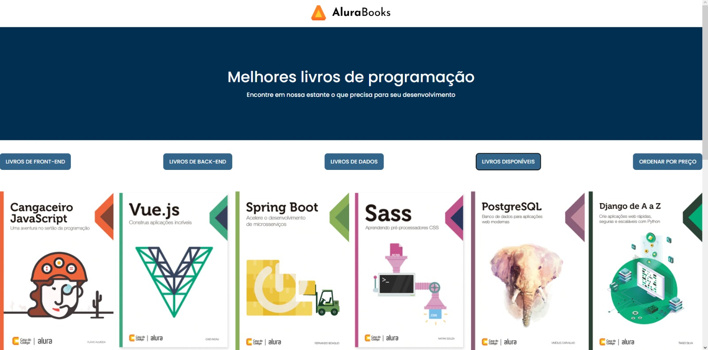
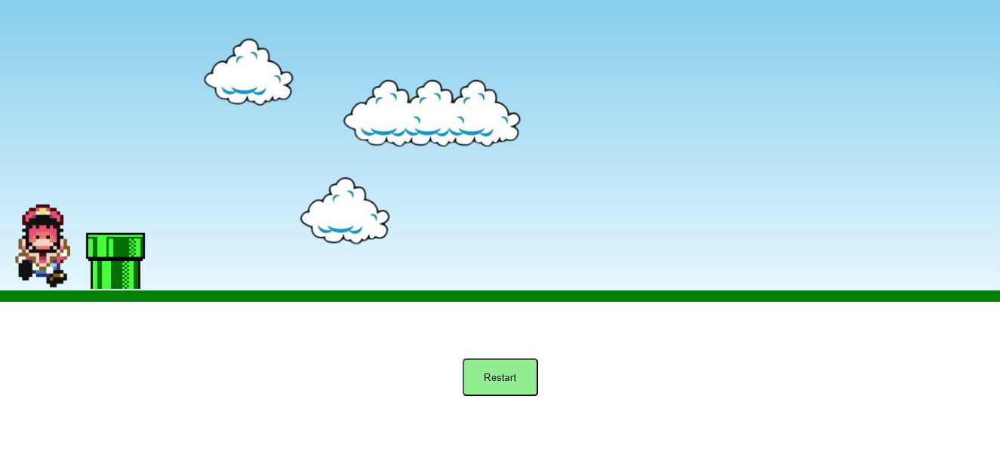
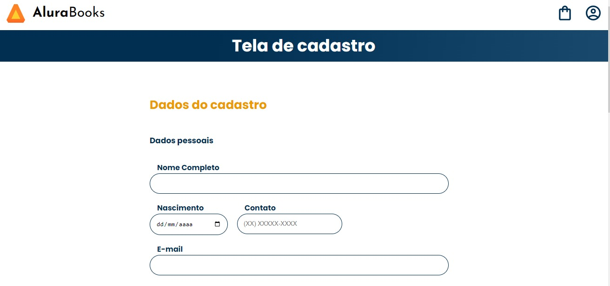
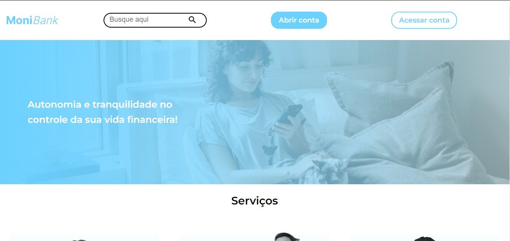

Projetos
- AluraBooks
Tecnologias utilizadas:
- HTML | CSS | JS
Um site simples simulando uma livraria online, onde o usuário pode filtrar os livros por conteúdo e disponibilidade, consumindo os dados através de uma API
- Game Mario
Tecnologias utilizadas:
- HTML | CSS | JS
Um site simples simulando em que o Mario (você) terá que pular o máximo de obstaculos que conseguir
- Formulário de Cadastro
Tecnologias utilizadas:
- HTML | CSS | JS
Um site simples simulando um formulário de cadastro e uma tela de cadastro concluido, consumindo a API ViapCep
- Landing page e formulário de cadastro com validações
Tecnologias utilizadas:
- HTML | CSS | JS
Uma landing page de uma plataforma financeira com um formulário de cadastro com validações em JS